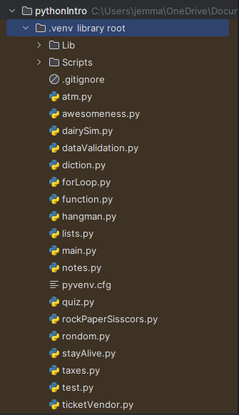

A list of the practise codes that I did.
We started learning about the python coding language and commands, such as variables, strings, integers, conventions, functions, and the various coding methods people use.
Before we did the actual assessment, we played around with the code and it's functions, practising and growing our coding skills. We did a variety of exercises such as 'fill in the blanks' coding, or making a game such as paper, scissors, rock or hangman.